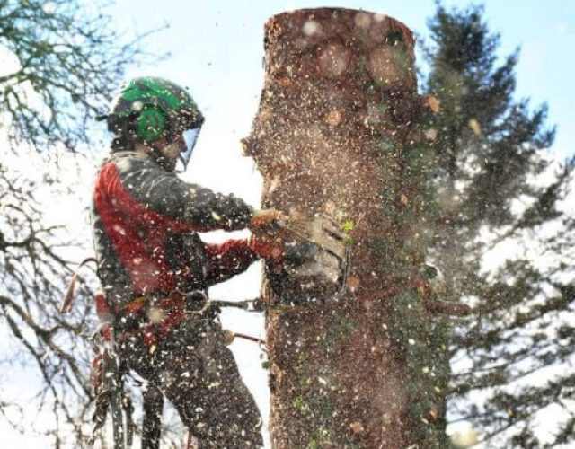
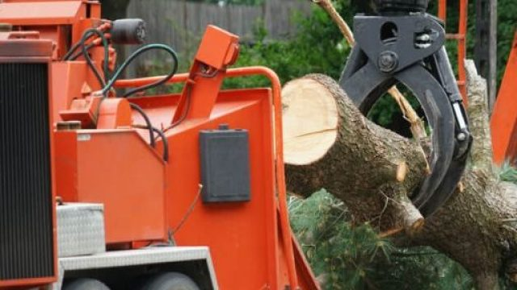
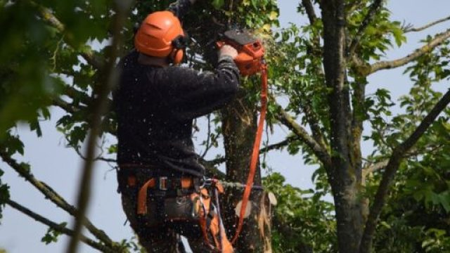
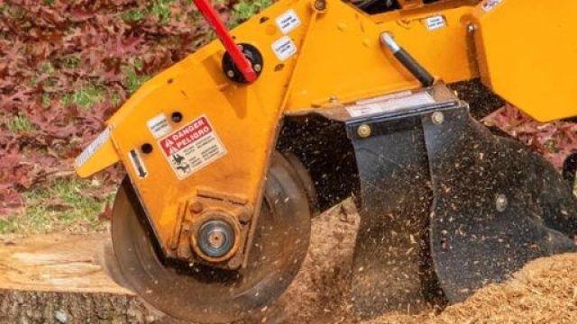
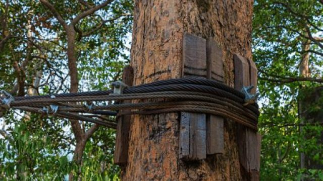
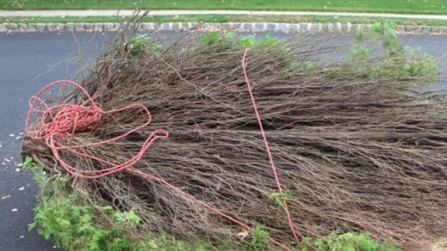
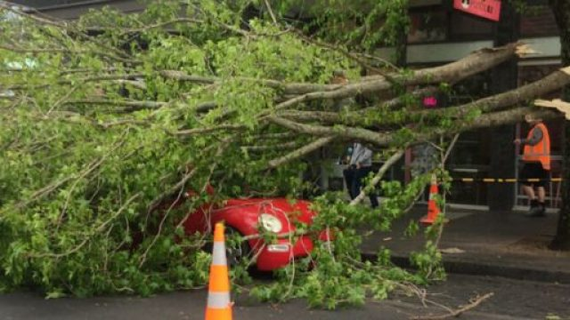

Tree Service Chubbuck Idaho
Tree Removal, Tree Trimming & Much More - That's What We Do 24/7.
Call For A Free Estimate !
Call Now : 208-417-7993Get A Free Quote Here !
Please enable JavaScript in your browser to complete this form. Name * First Last Phone Number * Email * Service Required? * Submit
Tree Service in Chubbuck , Idaho
If you’re looking for professional tree service in Chubbuck, Idaho then you’ve come to the right place. Our company is dedicated to providing exceptional care and maintenance for your trees. Whether you need simple pruning to enhance the aesthetic appeal of your property or complete tree removal due to safety concerns, we have the expertise and equipment to handle it all.
We understand the importance of preserving the natural beauty of your surroundings while ensuring the safety of your home or business.
Our professionals are trained to assess the health of your trees and offer tailored solutions to ensure their longevity. With our state-of-the-art equipment and industry-leading techniques, you can trust us to deliver top-notch tree service in Chubbuck.
Our company is located in Pocatello, Idaho, provides tree service in Pocatello , tree service in Twin Falls , Idaho, tree service in Caldwell, Idaho , tree service in Idaho Falls, and tree service in American Falls, as well as the surrounding areas.
Call us now : 208-417-7993Why choose our company for your tree service needs?
- Professional Experienced Staff:
In the Chubbuck, Idaho, there are so many tree service companies exist, but only a select few, like us, engage a professional and experienced staff capable of providing a diverse range of tree-related services.
When we emphasize experience, we refer to our crew’s adeptness in utilizing the latest techniques for both residential and commercial tree services. Our commitment extends to employing advanced, secure, and efficient tools and equipment.
In essence, our crews collectively hold decades of invaluable experience, a quality that underscores our responsible approach to the job. While tree removal might seem routine to some, for us, it’s a task executed with pride and passion. Our services mirror the essence of who we are.
- Customer Satisfaction:
The satisfaction of our customers is our utmost priority. Our dedication and passion fuel our unwavering commitment to excellence. Trees often require removal or trimming for a variety of reasons, primarily due to the potential risks they pose to our surroundings and the people in the area.
As a result, we approach tree care with a profound sense of responsibility and mindfulness, prioritizing the safety and well-being of both the environment and the community.
- Affordable Price:
Executing our job with professional experience inherently leads to optimal efficiency. We operate with precision, avoiding the wastage of time, resources, and energy to ensure the satisfactory completion of our tasks.
This efficiency enables us to provide budget-friendly tree services throughout the Chubbuck, Idaho area. Our ability to discern what needs to be done, where, and when allows us to make every move with confidence, aligning each action with our overarching goals.
All our tree-related services are available at a reasonable price and are exclusively carried out by experts.
- Residential & Commercial Tree Service:
We recognize the unique demands of different spaces when it comes to tree removal or trimming services, as well as other offerings like tree stump removal or grinding.
Whether you require residential tree removal or commercial tree services, we are here to guide you through every step. Our commitment to safety is unwavering, ensuring the well-being of everyone involved.
Understanding the complexities of tree removal, we emphasize the importance of leaving this task to professionals with the right tools. Attempting a DIY approach without experience and proper equipment can be challenging and unsafe. Let us handle it for you! Contact us now, and we’ll assess your home or business space, initiating prompt and efficient service.
Call Us Now : 208-417-7993How do you choose a quality tree service company?
The same rationale applies to seeking the best physician when we fall ill or hiring the finest contractor when something needs fixing. Similarly, when it comes to addressing tree-related issues, it’s essential to opt for the best tree service in Chubbuck, Idaho.
While tree removal services may seem routine, they pose significant challenges, especially for inexperienced individuals. A seasoned tree specialist possesses the expertise to navigate various tree removal scenarios, knowing precisely what steps to take. By selecting a high-quality tree service company, you not only save money but also conserve valuable time and resources.
Call Us : 208-417-7993Our Best Tree Services :

Tree Removal in Chubbuck, Idaho
Among our array of services, tree removal stands out as one of the most sought-after. We take pride in being at the forefront of our game when it comes to efficiently handling tree removal tasks.
Our experienced crew has successfully addressed numerous tree removal scenarios, making it second nature to us. We execute the process swiftly and with precision.
Whether it’s a few trees or specific situations, we’ve tackled them all, ensuring the safety of the surrounding area. Additionally, we provide the flexibility to either safely leave the stump behind or remove it, depending on your preference.
You can call us now, and we will do a thorough analysis of what needs to be done.
Read More
Tree Trimming in Chubbuck, Idaho
Unlike the specific steps involved in successful and efficient tree removal, tree trimming is a more delicate process, requiring careful attention and our expertise to be executed correctly.
When it comes to tree trimming, precision is crucial to avoid unintentionally damaging healthy buds, which could impact the tree’s future growth. Our experienced crew possesses the knowledge to trim any type of tree with precision and care.
Recognizing the uniqueness of each tree, we approach tree trimming with a tailored perspective. It’s essential to consider the species and characteristics of the tree at hand to ensure proper care and growth. In Pocatello, Idaho, our tree trimmers are dedicated to providing the best services, ensuring the well-being and longevity of every tree we work on
Read More
Tree Stump Grinding and Removal in Chubbuck, Idaho
After a tree is removed, the stump can be an eyesore and a potential hazard. We offer professional stump grinding and removal services to ensure that your landscape remains safe and aesthetically pleasing.
Read More
Tree Cabling and Bracing in Chubbuck, Idaho
For trees with structural weaknesses or those at risk of damage from heavy winds, our tree cabling and bracing services provide added support to ensure the stability and longevity of the tree.
Read More
Shrub Removal in Chubbuck, Idaho
In addition to tree services, we also offer shrub removal to help you maintain a well-groomed landscape.
Read More
24/7 Emergency Tree Services in Chubbuck, Idaho
We understand that tree-related emergencies can occur at any time. That’s why we offer 24/7 emergency tree services to address unexpected issues promptly.
Read MoreResidential And Commercial Tree Service:
Whether catering to residential needs or addressing commercial requirements, regardless of the quantity of trees involved, we’ve got your back. We understand the significance of ensuring the safety of your home and business from potential hazards, particularly posed by dying or withered trees. Our dedicated tree service is here to assist.
Recognizing the paramount importance of maintaining a safe environment for your clients and customers at your place of business, we are committed to providing tree removal or trimming services as needed. Rest assured, our goal is to ensure that both residential and commercial properties retain their optimal appearance and safety standards.
About Chubbuck, Idaho :
The city of Chubbuck is a small, suburban city in Idaho. Its population, according to the US Census Bureau, is about 13,922 people. For more information about Chubbuck, Idaho, visit Wikipedia .
Call Now : 208-417-7993Questions & Answers
Tree service clients’ most frequently asked questions :
On average tree removal and other related services could cost around $500. Don’t worry, we provide one of the most reasonably priced tree services in Chubbuck, Idaho so call us now for your free estimate!
Certain factors make tree removal a bit expensive. One is that when a tree is very large so it would be cheaper to trim it. The second reason factor is when a tree is near any property because we need to safeguard the said property in the process of removing a tree.
No matter your decision, we can work around it and find the best solutions. A tree should be removed for so many reasons. When it’s hollow when it shows signs of infections, or if there are any visible defects on its roots. Don’t worry, we can analyze it and tell you the best course of action for your problem.
 In our yard, we have a huge elm tree, and in our backyard, we have a giant cottonwood that is trimmed by this company.
I found them to be extremely knowledgeable and friendly.
It was wonderful to watch the clean-up!
I think it looked better than when the first group arrived!
This tree service is certainly one we would recommend.
Clara
In our yard, we have a huge elm tree, and in our backyard, we have a giant cottonwood that is trimmed by this company.
I found them to be extremely knowledgeable and friendly.
It was wonderful to watch the clean-up!
I think it looked better than when the first group arrived!
This tree service is certainly one we would recommend.
Clara
 This Tree Service company has awesome service. I was devastated by the removal of a very large tree, which was located right next to my house. It was an extremely competitive and fair bid. Their arrival was on time and as planned (even early!). I was impressed by the whole crew. Very hard workers and very safe as well.
Amelia
This Tree Service company has awesome service. I was devastated by the removal of a very large tree, which was located right next to my house. It was an extremely competitive and fair bid. Their arrival was on time and as planned (even early!). I was impressed by the whole crew. Very hard workers and very safe as well.
Amelia
 My business will always be with this tree service company. It was hired to trim a number of large trees in my backyard. The extremely large trees on my property needed a lot of attention. To make my trees healthy and safe, I asked them to do whatever was needed. It was discovered there were several dead limbs that had a lot of potential for damage come winter. Just as I wanted, I received perfectly trimmed trees that were safe and healthy.
Ryan
My business will always be with this tree service company. It was hired to trim a number of large trees in my backyard. The extremely large trees on my property needed a lot of attention. To make my trees healthy and safe, I asked them to do whatever was needed. It was discovered there were several dead limbs that had a lot of potential for damage come winter. Just as I wanted, I received perfectly trimmed trees that were safe and healthy.
Ryan